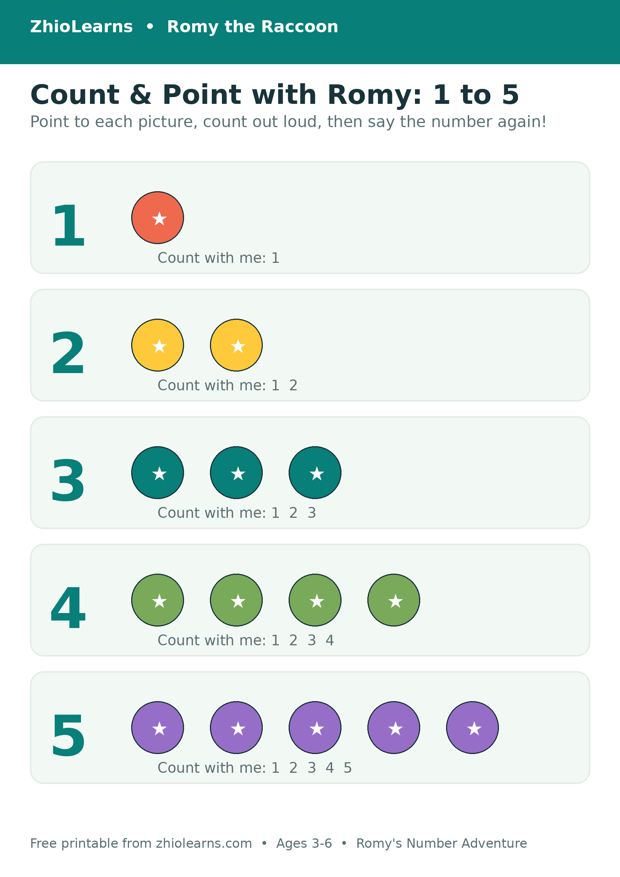

How Many? Why Your Child Counts It All Over Again
It goes like this. Three apples on the table. Your child touches each one, carefully, the way you taught them: “One… two… three!” You smile and ask the obvious question: “So how many apples are there?” And your child, without missing a beat, starts again: “One… two…”
It can look like they weren’t listening, or like the counting didn’t “work.” Neither is true. What you just watched is one of the most important stages in early maths, happening exactly on schedule.
Counting is a routine before it is an answer
When a three- or four-year-old counts, they are first learning a routine: point at one thing, say one number word, move to the next thing. The words arrive in order, the finger keeps up, and the whole performance ends with a satisfying final number. But in the child’s mind, that final number is mostly just… the end of the song. It is the last word you say when you count, the way “amen” is the last word of a prayer.
The deeper idea — that the last number is the total, that “three” doesn’t just name the last apple but tells you how many apples there are altogether — has its own name among teachers: cardinality. It sounds technical. In real life it is the difference between recounting the spoons every time someone asks, and one day just glancing and saying “four.” Every child gets there. They just get there by counting things, out loud, with somebody patient, many more times than adults expect.
Say the answer like it’s good news
There is a small move that helps the idea land, and it costs nothing: after counting together, say the total yourself, out loud, as a warm fact — not a quiz.
“One, two, three… three spoons! That’s how many we need.”
“One, two, three, four — four crayons. Your turn to put them back.”
You are not correcting anything. You are simply letting your child hear, over and over, that the counting ends in an answer — the way a story ends in a last page. Children borrow that sentence long before they understand it, and one ordinary Tuesday they will say it first, all by themselves, and look very pleased.
The hiding game
When the recounting stage has been around a while, there is a game that gently invites the next step. Count a small set together — four buttons is plenty. Then cover them with a cloth or your hands and ask, with real curiosity: “How many are hiding?”
Most children will count in the air, pointing at nothing, rebuilding the set from memory: one, two, three, four. That air-counting is wonderful — it means the numbers now live in their head, not only under their finger. Play it a few times across a few days, keep the sets small, and stop while it is still funny. Somewhere in those repetitions, the recount quietly becomes unnecessary, and the answer starts arriving on its own.
Two things to skip while you wait: making the sets bigger to “test” them, and asking “are you sure?” after a wrong answer. Both turn a game into an exam. Small sets, warm answers, and time do the whole job.
A first counting book that takes its time
Romy’s Number Adventure was built for exactly this stage. It is a first counting book designed for lap time, ages 3–5: every page invites your child to point at the pictures, count, and say the numbers out loud with you, inside a gentle story-shaped adventure. No tests at the end, no pressure to perform — just the warm repetition that turns counting from a routine into real understanding. Families who want to keep going afterwards reach for its companion, Romy’s Big Number Adventure.
Count a few pages together tonight. Then try the free printable below tomorrow: point, count out loud, and circle the number — the last number said out loud, now with a pencil in hand.
🖨️ Free printable: Romy’s Count & Point 1–5

Point to each picture, count out loud together, then count and circle the right number. Two pages, ages 3–6, free, no sign-up needed to print it. Ready for more? Follow it with Romy’s Count & Trace 6–10, also free in our printables.
Download the free printable (PDF)📚 Today’s book
Find Romy’s Number Adventure and Romy’s other books in our little shop — and read Romy’s Alphabet Picnic free in the Storytime section.
See Romy’s books →🌿 More from the Parent Corner
Why does counting past five wobble even in confident little counters? Yesterday’s companion piece follows Romy into the bigger numbers.
Three Tries and Done →